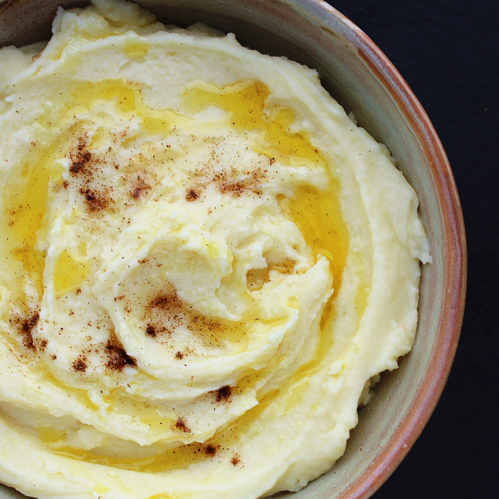

Instant Pot Mashed Potatoes

Description
This is an easy take on mashed potatoes. The potatoes pressure cook away while you focus on other things. This is a basic but tasty recipe; feel free to update with your own ingredients. You can peel the skins if you prefer. Once you mash it up, you can return insert back to the pot, reattach the lid, and place it on the Keep Warm function until you are ready to serve.
Ingredients
- 1 1/4 pounds Yukon Gold potatoes
- 1 1/2 cups water
- 2 cubes chicken bouillon
- 1/2 cup sour cream
- 1/2 cup unsalted butter
- 2 tablespoons milk
Steps
- Cut potatoes into 1-inch cubes. Add to a multi-functional pressure cooker (such as Instant Pot®) with water and bouillon cubes. Select Saute function; set timer for 4 minutes on High.
- Mix potatoes and water and break up the bouillon cubes. Close and lock the lid. Select high pressure according to manufacturer's instructions; set timer for 10 minutes. Allow 10 to 15 minutes for pressure to build.
- Release pressure using the natural-release method according to manufacturer's instructions, about 10 minutes. Release remaining pressure carefully using the quick-release method. Remove the pot and carefully drain off most of the liquid.
- Add sour cream, butter, and milk. Gently mash with a potato masher to reach your desired consistency.
Home